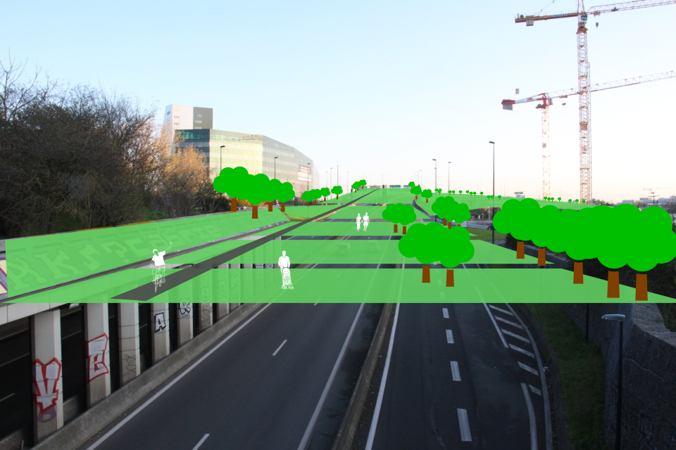
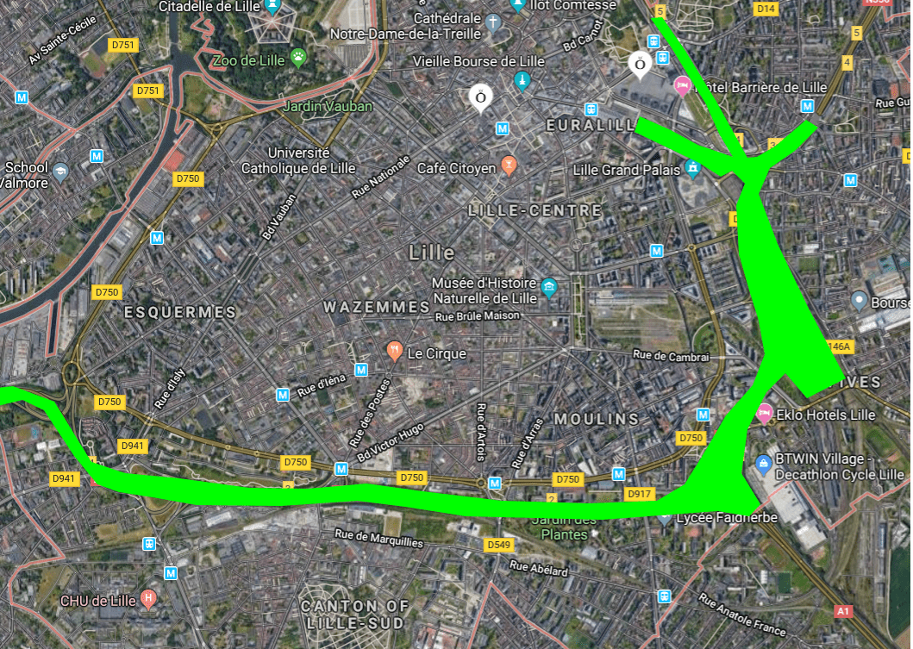

La bande verte
Développer une nouvelle bande verte à travers Lille en couvrant les autoroutes A1/A22/A25/N356 avec une toiture et parc végétalisé au-dessus. Les efforts similaires sont en cours dans autres villes pour ajouter les espaces verts, réduire considérablement la pollution d'air et de la bruit. Pour Lille, cette bande et parc sont aussi un moyen de connexion naturelle avec les quartiers Fives et Lille Sud et les passerelles de plus naturel à Lillenium, entre Fives Cail et Saint Sauveur et entre Parc Matisse et le Jardin de Géants.
Une idée certes ambitieuse, mais compte tenu du manque d'espace disponible et de l'autoroute qui sépare Lille, un tel projet pourrait répondre à de multiples enjeux : créer un espace vert récréatif de grande envergure, relier les différents quartiers de la ville, réduire le bruit et la pollution atmosphérique. C'est l'espace, la ville peut mettre à disposition et un projet phare potentiel pour Lille.
Sources de renseignements